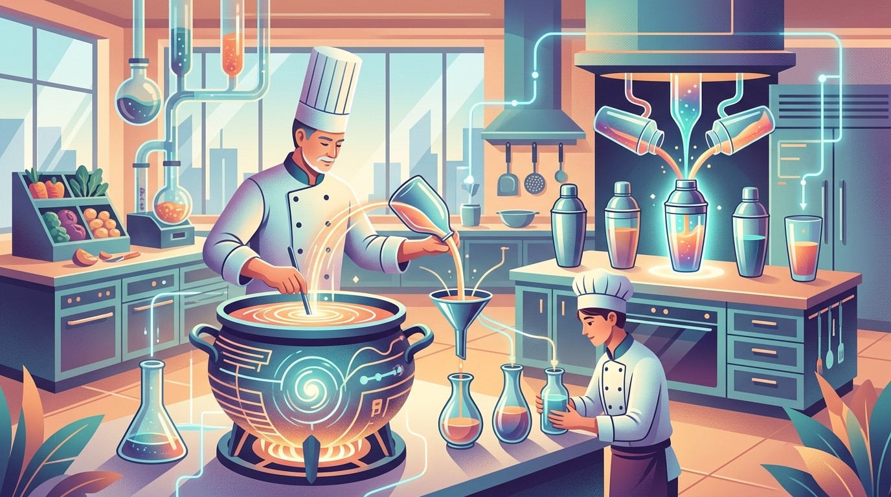

"The goal is to make the student not just mimic the teacher, but understand why the teacher makes the choices it does."
Distill AI Agent

Chapter Overview
Fine-tuning adapts an existing model to new tasks, but it is not the only way to create specialized models. Knowledge distillation transfers capabilities from a large "teacher" model into a smaller, faster "student" model, enabling deployment at a fraction of the cost. Model merging combines multiple fine-tuned models into a single model that inherits capabilities from all of them, without any additional training.
These techniques have produced some of the most impressive results in the open-source LLM ecosystem. Microsoft's Phi models used distillation from GPT-4 to create small models that punch far above their weight, challenging conventional scaling laws. Community model merges on the Open LLM Leaderboard routinely outperform their constituent models. DeepSeek used distillation to create efficient reasoning models from their larger R1 teacher.
This module also covers continual learning: how to adapt models to new domains over time without catastrophically forgetting their general capabilities. By the end, you will understand the complete toolkit for creating, combining, and evolving specialized LLMs for production deployment.
Learning Objectives
- Explain the theory of knowledge distillation, including soft targets, temperature scaling, and the KL divergence loss
- Implement both white-box and black-box distillation pipelines for LLMs
- Analyze case studies of successful distillation (Orca, Phi, distilled DeepSeek-R1) and extract design principles
- Apply model merging methods (Linear, SLERP, TIES, DARE) using MergeKit to combine specialized models
- Understand task arithmetic and model soups as approaches to multi-task model composition
- Design continual pre-training pipelines for domain adaptation with replay and regularization strategies
- Implement vocabulary extension for domain-specific terminology without degrading general performance
- Evaluate merged and distilled models against their source models using appropriate benchmarks
Prerequisites
- Chapter 13: Fine-Tuning Fundamentals (training workflow, loss functions, evaluation)
- Chapter 14: Parameter-Efficient Fine-Tuning (LoRA, adapter merging concepts)
- Chapter 04: Inside the Transformer (softmax, attention, weight matrices)
- Chapter 08: Inference Optimization (quantization, model formats, serving)
- Familiarity with PyTorch training and the Hugging Face ecosystem
Model merging is basically the "fusion dance" from Dragon Ball Z, except instead of two warriors combining into one super-fighter, you are jamming together six LoRA adapters and hoping the result does not hallucinate its way into the Open LLM Leaderboard Hall of Shame.
Knowledge distillation is essentially the academic version of "I will copy your homework but change it enough so the teacher does not notice." Except in this case, the teacher is actively helping you copy, the homework is a trillion-token language model, and the "change" is compressing it from 70 billion parameters down to 7 billion while pretending nothing was lost.
Sections
- 15.1 Knowledge Distillation for LLMs 🔴 ⚙️ 🔧 Classical distillation (teacher-student, soft targets, temperature), black-box distillation from API models, white-box distillation, case studies (Orca, Phi, distilled DeepSeek-R1), speculative distillation, and small-but-capable models.
- 15.2 Model Merging & Composition 🔴 ⚙️ 🔧 Model merging intuition, methods (Linear, SLERP, TIES, DARE, Model Stock), task arithmetic, model soups, MergeKit usage, and evolutionary model merging for automated optimization.
- 15.3 Continual Learning & Domain Adaptation 🔴 🔬 Continual pre-training on domain corpora, vocabulary extension, replay methods for catastrophic forgetting prevention, Elastic Weight Consolidation, and progressive training with curriculum approaches.
What's Next?
In the next section, Section 15.1: Knowledge Distillation for LLMs, we start with knowledge distillation for LLMs, learning how to transfer capabilities from large teacher models to smaller students.